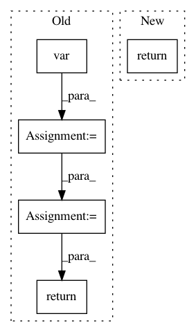

23320c8733b232b72606dbcc7f79a0d51d3fcc39,scanpy/preprocessing/_deprecated/highly_variable_genes.py,,filter_genes_fano_deprecated,#Any#Any#Any#,215
Before Change
if issparse(X):
raise ValueError("Not defined for sparse input. See `filter_genes_dispersion`.")
mean_filter = np.mean(X, axis=0) > Ecutoff
var_filter = np.var(X, axis=0) / (np.mean(X, axis=0) + .0001) > Vcutoff
gene_subset = np.nonzero(np.all([mean_filter, var_filter], axis=0))[0]
return gene_subset
After Change
def filter_genes_fano_deprecated(X, Ecutoff, Vcutoff):
Filter genes by fano factor and mean.
return _filter_genes(X, Ecutoff, Vcutoff, np.var)
def _filter_genes(X, e_cutoff, v_cutoff, meth):
\
In pattern: SUPERPATTERN
Frequency: 3
Non-data size: 5
Instances
Project Name: theislab/scanpy
Commit Name: 23320c8733b232b72606dbcc7f79a0d51d3fcc39
Time: 2019-08-20
Author: flying-sheep@web.de
File Name: scanpy/preprocessing/_deprecated/highly_variable_genes.py
Class Name:
Method Name: filter_genes_fano_deprecated
Project Name: apache/incubator-tvm
Commit Name: 81ad18edc7360dc7110a479e051ba9161a25f2cf
Time: 2020-05-26
Author: comaniac0422@gmail.com
File Name: tests/python/relay/test_pass_merge_composite.py
Class Name:
Method Name: make_add_sub_mul_pattern
Project Name: nipy/dipy
Commit Name: f84d08c5d0dbd61cc2196d1b9739009241340593
Time: 2012-11-09
Author: Bago.Amirbekian@ucsf.edu
File Name: dipy/sims/phantom.py
Class Name:
Method Name: add_noise